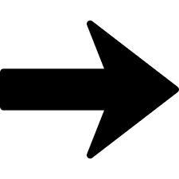
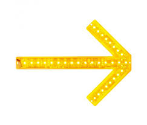

Stranger Things é uma série que foi lançada em 2016.
A serie se passa na cidade de Hawkings, onde mora um grupo de amigos: Mike, Dustin, Lucas e
Will, onde eles conhecem a Onze, que é uma menina que tem super-poderes e que é mantida presa em laboratório para
experimentos mentais com a garota.
A ameaça mesmo está quando Will é capturado, e daí começa a acontecer acontecimentos misteriosos
na cidade e para desvendar esses mistérios o grupo de amigos junto com Onze, após ela escapar,
começam a ir atrás do amigo e acabam descobrindo algumas coisas sobrenaturais, mas isso é para outra
hora, assistam a série e vocês verão.
Temporada 1
Temporada 2
Temporada 3
Temporada 4